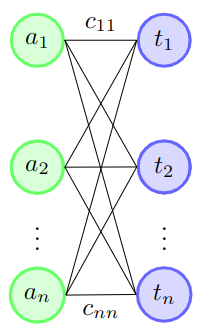
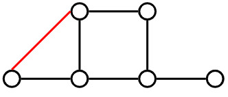
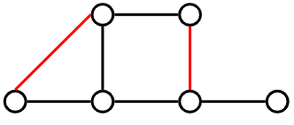
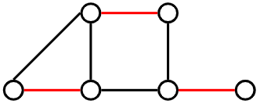
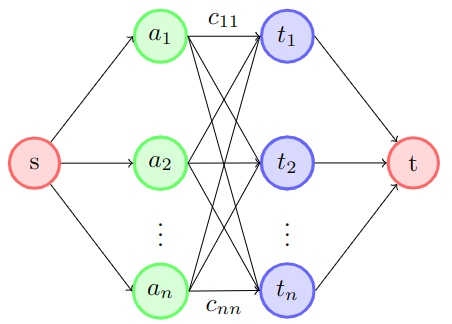
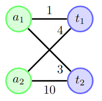
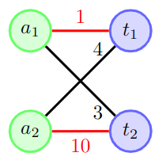
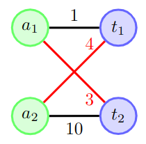

Graph Matching and the Assignment ProblemOverview of the Assignment ProblemThe assignment problem is a classical combinatorial problem where we are given a agents and t tasks to complete. Let's denote A as the set of agents and T as the set of tasks. Each possible pairing of an agent and task has an associated cost which we can describe as a mapping \(C: (A, T)\rightarrow \mathbb{R}\). Each agent can only complete one task and we need each task to be completed. The goal of the problem is to minimize the total cost to complete all of the tasks. We should note that if the number of agents is equal to the number of tasks, then we would refer to this as a balanced assignment problem (we will be working with this). If the number of agents is greater than the number of tasks, it would be an unbalanced assignment problem. We can turn an unbalanced assignment problem into a balanced assignment problem through creating "dummy" tasks where we just assign a cost of 0 for every agent. We dont need to consider the case where the number of tasks is greater than the number of agents as we would either need an agent complete more than one task or have unfulfied tasks. An example where such a problem arises is in smart warehouses where we could have multiple drones flying through a warehouse and we need to pick up a set of packages. The cost function could be the total distance the drone has to travel to pick up then drop off a select package. So what we are trying to do is minimize the total distance the drones have to travel to pick up and drop off all of the packages. We will see a sample problem relating to this later on. Formal Defintion of a Balanced Assignment ProblemLets give a mathematical defintion on what we are trying to do. From above, A is the set of agents, T is the set of tasks and C is the cost function \(C: (A, T)\rightarrow \mathbb{R}\). Our goal is to find a bijection \(P: A \rightarrow T\) such that we are minimizing: $$ \sum_{a \in A}^{} C(a, P(a))$$ *Note that a bijection in our case means that for every task \(t \in T\), there exists exactly one agent \(a \in A\) such that \(P(a) = t\) Representing our Bijection as a GraphLets try to represent all the possible pairings of our bijection as a graph:  We will represent every agent as a set of green nodes and every task as a set of blue nodes. We will represent a possible pairing between an agenet and a task through an edge. One of the first things that we will notice about our graph is that it is bipartite. A bipartite graph is a graph that the vertcies can be divided into two indepedent sets such that every edge has the two end points in different sets. In our case, the first set is all the agents (green verticies) the other set is all of the tasks (blue verticies). Then the weighted edges would represent the cost for an agent to complete a specific task. We call a graph a complete bipartite graph if every vertex connects to every other vertex that is a part of the opposite set. Graph Matching DefinitionsSuppose that we have a graph G = (V, E). Lets define a few keys terms that build upon each other:
 An example of a matching that is neither maximal or maximum-cardinality  An example of a matching that is maximal but not maximum-cardinality  An example of a matching that is maximum-cardinality (thus maximal as well) Minimum Cost Bipartite Matching Problem
Now lets look at a variation of the graph matching problem: Suppose that we have a weighted complete bipartite graph G = (V, E), such that V is split
into two equal groups A and T each of size n and we have a cost function \(C: E \in (A \times T) \rightarrow \mathbb{R}\) to represent the weights of
the edges. Our goal is to find the maximum-cardinality matching with the lowest total weight. Hungarian Algorithm
Although an intuitive way to go about solving this question is to just turn our graph into a network flow problem as such:  It would only be able to give us a solution in psuedo-polynomial time as it would also depend on the weights of the edges (see Ford-Fulkerson Algorithm). Thankfully, with the Hungarian algorithm we able to achieve a solution in strongly polynomial time. The algorithm was developed by Harold Kuhn in 1955 but coined the algorithm as the "Hungarian Algorithm" because it was based on the works of two Hungarian mathematicians the century earlier. Before we get into the algorithm, lets look at a simple example on why selecting edges purely based off weight is not ideal. Suppose we have the following graph:  If we greedily select \(\overline{a_1t_1}\) because it has the lowest cost, then we are forced to select \(\overline{a_2t_2}\) because the other two edges connect to either \(a_1\) or \(t_1\).  So our total cost here will be 11. But the other matching below will yield a total cost of 7:  When we match an agent to a task, we are also thus preventing any other agent from matching with that task. So we need a way to account for the possible lost "oppertunity cost". Running through an example with three nodes |